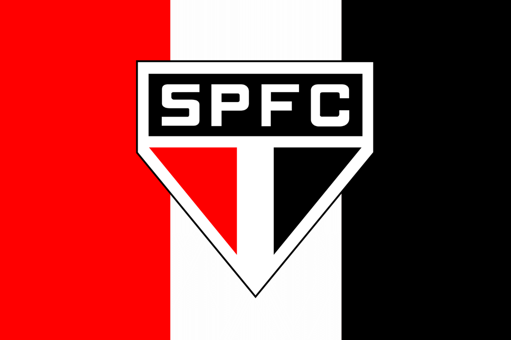

Santos
O Santos Futebol Clube, fundado em 1912, é uma equipe de destaque no futebol brasileiro e mundial. Conquistou títulos importantes, como a Copa Libertadores e revelou grandes talentos, incluindo Pelé. Conhecido pelo estilo de jogo ofensivo, o Santos FC mantém sua posição como uma instituição respeitada no cenário do futebol.

Corinthians
O Sport Club Corinthians Paulista, fundado em 1910 em São Paulo, é um dos principais clubes do futebol brasileiro. Conhecido como Corinthians, conquistou títulos nacionais e internacionais, como o Campeonato Brasileiro, a Copa Libertadores e o Mundial de Clubes da FIFA. Sua torcida, a "Fiel Torcida", é uma das mais apaixonadas do mundo. O clube é reconhecido pela sua forte identidade e tradição no cenário do futebol.

Palmeiras
O Palmeiras Futebol Clube, fundado em 1914 em São Paulo, é um dos principais clubes do futebol brasileiro. Conhecido como Palmeiras, conquistou vários títulos importantes, incluindo a Copa Libertadores e a Copa do Mundo de Clubes da FIFA. Tem uma grande torcida e uma intensa rivalidade com outros clubes paulistas.

São Paulo
O São Paulo Futebol Clube, fundado em 1930, é um dos clubes mais importantes do futebol brasileiro. Conhecido como São Paulo, conquistou vários títulos nacionais e internacionais, incluindo a Copa Libertadores e o Mundial de Clubes da FIFA. Tem uma base sólida de torcedores e mantém uma rivalidade histórica com outros clubes paulista
